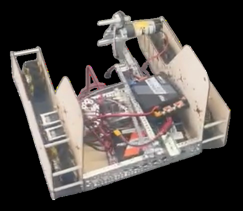
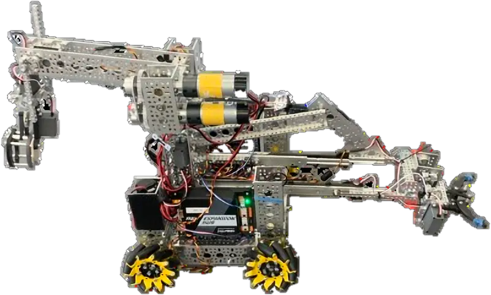
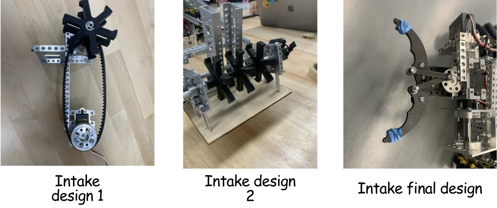
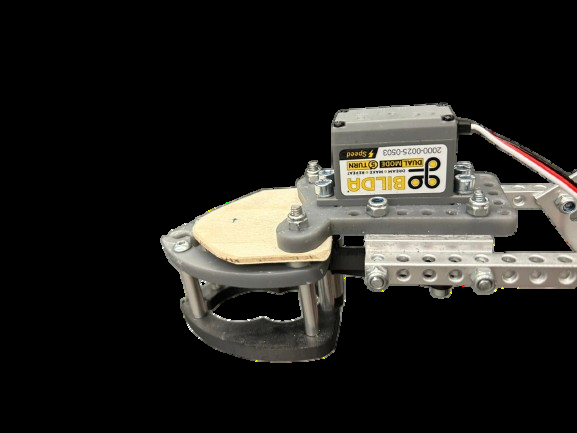
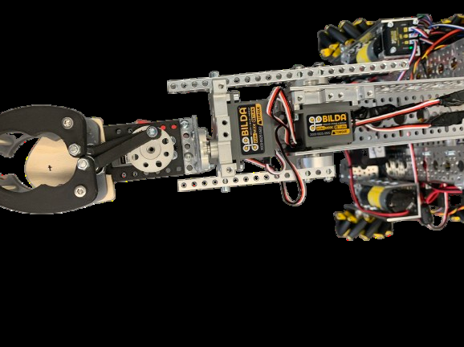
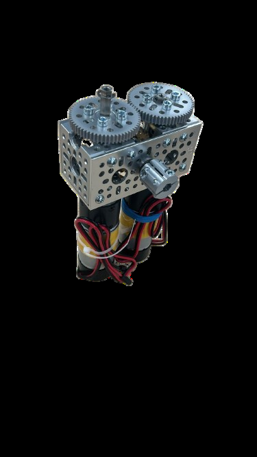

Early prototype
Our first concept used wooden base plates and a chamber for samples. We later changed the chassis and scoring strategy.
Our rookie season: an evolving robot built to collect samples and hang specimens.

Our first design aimed at basket scoring. After testing, we shifted toward collecting samples from the observation zone and hanging specimens on the submersible. The robot combines a claw intake with a separate lift arm for specimen scoring.
GNCE Mercury, FTC 26413INTO THE DEEP, 2024–25
From our Into the Deep portfolio
We prototyped a basket-focused robot with wooden base plates and a sample chamber. A change in game strategy led to a new chassis, an intake for collecting samples, and a lift arm for hanging specimens. These images and design notes come from our Into the Deep portfolio.

Our first concept used wooden base plates and a chamber for samples. We later changed the chassis and scoring strategy.

We moved from a rubber wheel concept to a claw that can grip samples from different orientations. A wrist helps the intake reach over the submersible.

A modified gripper gained a wooden alignment piece and a second claw to help keep specimens oriented for hanging.

The lift arm picks up and hangs specimens. We added a wrist so the gripper could adjust its angle.

A 1:28 gear ratio helps keep the lift from dropping under its own weight when power is removed.
Our portfolio describes a planned route that scores the starting specimen, moves 3 field samples to the human player for conversion, scores a converted specimen, then parks. We designed the route around the specimen strategy; the portfolio does not include a verified match record for it.